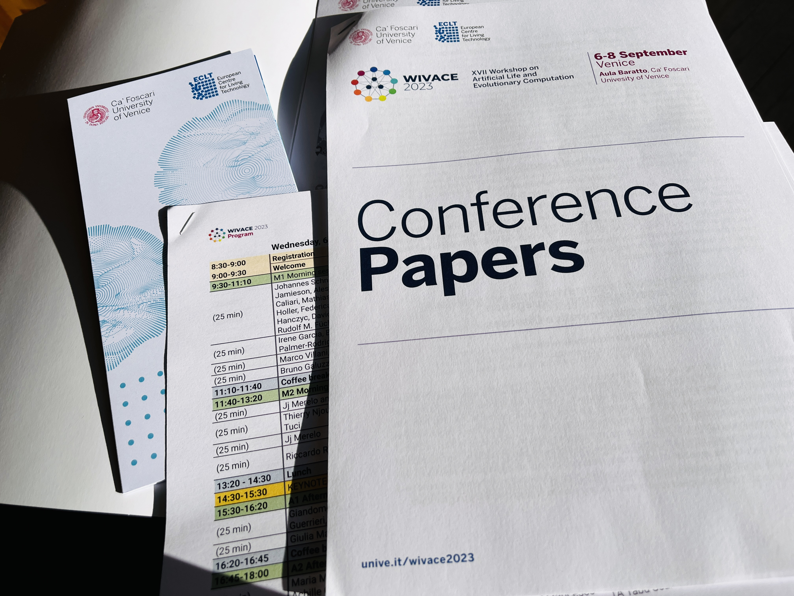

Abstract
WIVACE is an Italian word meaning "Lively" as it shows in google translate. WIVACE is an abbreviation for Artificial Life and Evolutionary Computation: 17th Italian workshop, WIVACE 2023, Venice, Italy, September 6-8, 2023 at the University of Venice. This report provides a detailed summary, media, and author details from the various presentations, keynotes and talks. From our "The Living Technology Lab", (me, Prof Stefano and Kristine Heiney, PhD) we presented two papers at WIVACE 2023. There were many relevant talks and presentations from different professors, postdocs and PhDs at the conference of which some of it are summarised in this text. The conference Schedule plan for the program has more details about the papers presented and keynotes. We also met some notable researchers and recognised faces in the research areas including but not limited to Emergent Complexity, ALife, Computational Biology, Evo-Devo and Evolutionary Robotics, community starting from Prof. Andrea Roli, Prof. Wolfgang Banzhaf, Joana C. Xavier, Ph.D., Prof. JJ Merelo, Prof. Roberto Serra, Prof. Paolo Pellizzari, Vassilis Papadopoulos, Paolo Baldini, Michiel Stock, Michiel Stock, Clément Hongler, Marco Tuccio and many other notable researchers from the community. But we also missed Eric Medvet and Bert Chan. Finally I would like to thank Monica Kristiansen Holone for all support from Østfold University College, Norway and also OsloMet University, Norway. The Conference venue was: Aula Mario Baratto, Dorsoduro 3246 - 30123 Venice and European Centre for Living Technology (ECLT) Ca' Bottacin, Dorsoduro 3911, Calle Crosera, 30123 Venice, Italy. Most probably the WIVACE 2024 is expected to being held in NAXYS, UNIVERSITY OF NAMUR UNamur
Day 1 - 6th September 2023